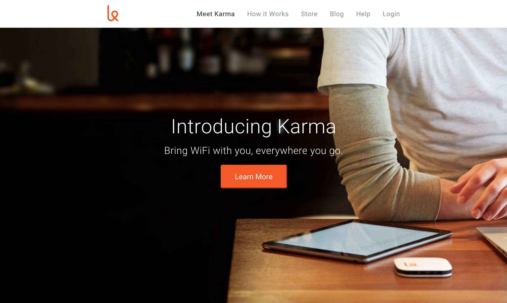

Hi, I'm
Web Developer and All-Around Good Guy
I am an entry-level front-end web developer who gets giddy at the thought of using code to make and change elements on web pages. I have a broad range of professional experience and skills ranging from desktop trouble-shooting to the ability to hand code HTML, CSS and JavaScript.
I love learning, especially learning about web technologies like HTML, CSS and JavaScript. I've only just started taking the Front End Career Path at Thinkful and I'm already loving what I've learned!
I volunteer with a local conservation organization that does river and trail repair as well as offering monthly presenters on related topics. Additionally, I manage their WordPress website as well as creating content for the site.
I am from Boulder, CO and am grateful for the wonderful childhood I had wandering through the foothills throwing rocks, breaking sticks and falling in love with the mountains. But like a lot of Coloradans, I also love the ocean. I went to school on the Gulf Coast for my Communications degree and I have been fortunate enough to spend a lot of time on the West coast.
I have left the Denver/Boulder area a few times for love and/or money but I always return. There's no place like it and I'm greatful to be back again.
Besides coding, I love to do all the things that make Colorado so great. I am a fly fisherman and fly tyer (I tie fur and feathers to a hook in an attempt to trick trout into eating the fake bug). I love to mountain bike and hike in the summer and ski in the winter. I'm also a hobbyist photographer. Basically, I have too many hobbies and not enough time or disposable income!
I am looking for an entry to junior level front-end web developer opportunity in the Denver area with a company that can benefit from and foster my curiosity and my desire to do good work and with an office environment that welcomes dogs.
I have a broad range of professional experience and skills ranging from desktop trouble-shooting to the ability to hand code HTML, CSS and JavaScript. I have worked in a wide variety of industries including outdoor recreation, healthcare, insurance brokerage and Government.
I love music and have recently been getting into electronic dance music on the mellow side. But I also like several indie bands like The National, Phantogram and TV On The Radio.
A project for the Front End Web Developer course at Thinkful called Hack the Times. It teaches students how to maniuplate a page withe Chrome Developer Tools by changing content and moving content around the page.
The second project for the Front End Web Developer course at Thinkful called Startup Landing Page Clone. It called for recreating a landing page by investigating the code with Chrome Dev Tools. We also used this course to push a web page to Git using the 'gh-pages' branching method.